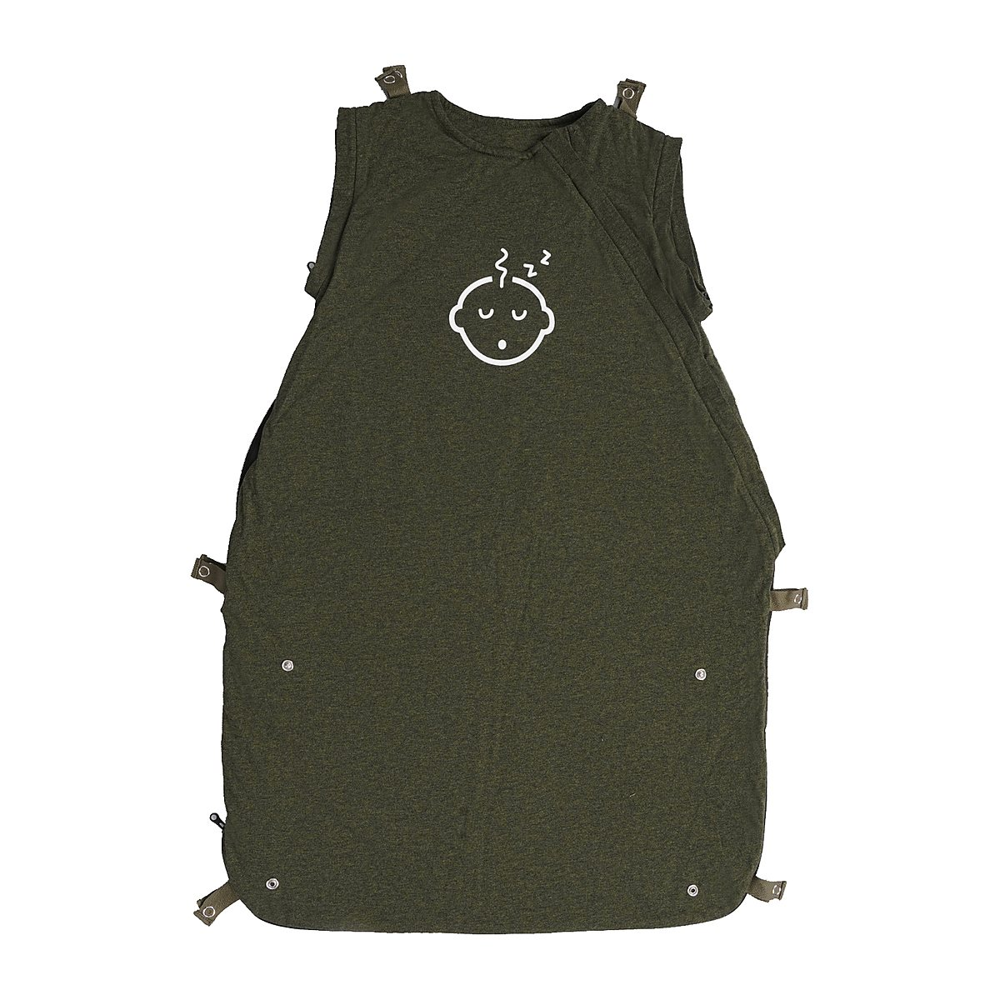
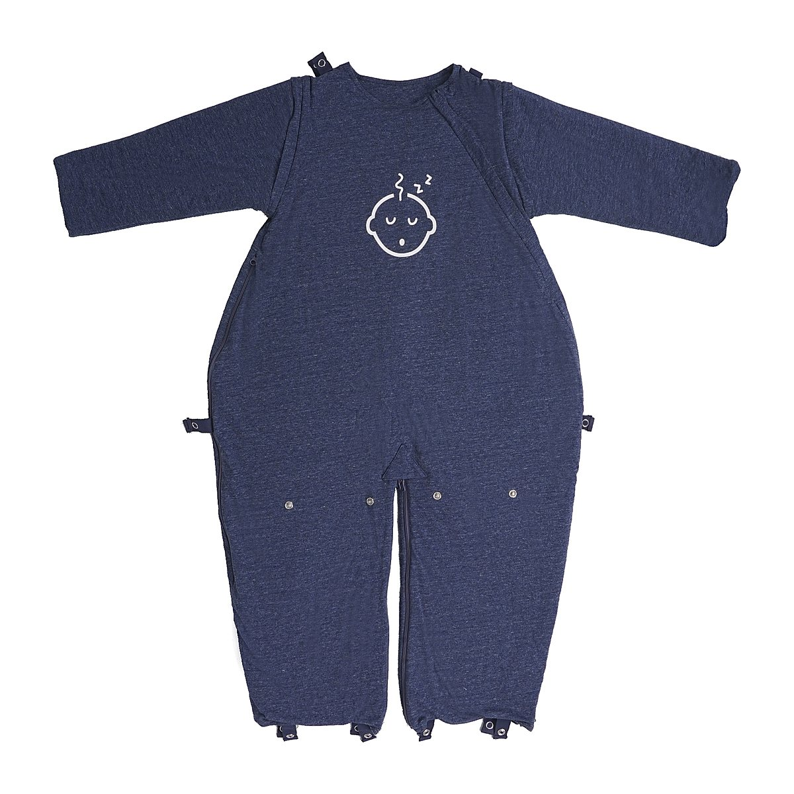
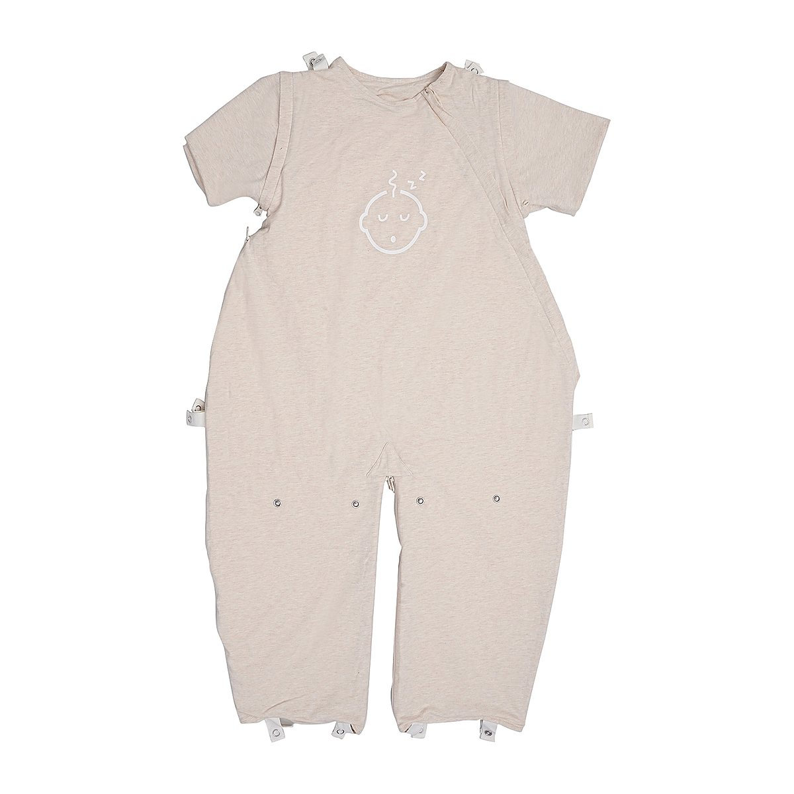
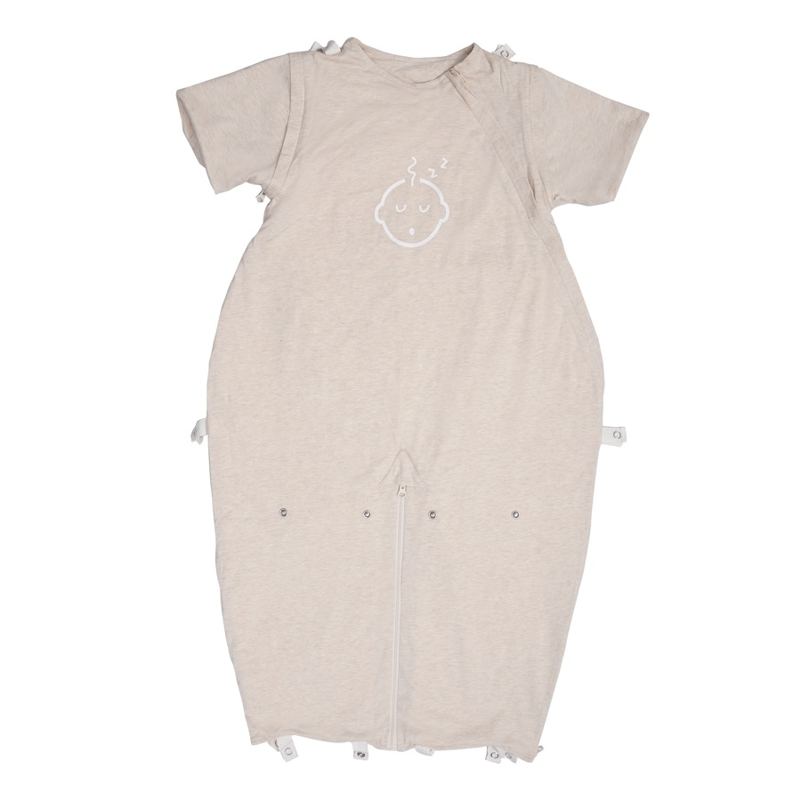
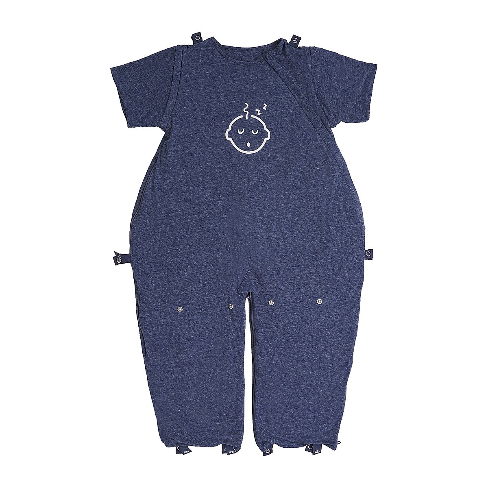

Warm rooms
Summer sack
Sleeves off, liner out. Light and breathable for warm nights.

The Every-Season Sleep Sack
Snap the sleeves on or off. Zip the liner in or out. Open the legs for little walkers, close them for sleep. 100% cotton, inside and out.
Do the math
Instead of replacing sleep sacks every season, change how you wear one.

Warm rooms
Sleeves off, liner out. Light and breathable for warm nights.

Cool rooms
Long sleeves on, liner zipped in. Cozy without loose blankets.

Little walkers
Legs open so they can stand, walk and play before bed.
3 sleep sacks → 1 OatmealBaby ·
Room temperature guide
Seasons don't tell you much: an air-conditioned July night can be cooler than a heated January one. Check the thermometer in the nursery and start here.
A starting point, not a rule. Feel your baby's chest or the back of their neck: warm and dry is just right; sweaty means take a layer off.
| Room temperature | Sleeves | Liner |
|---|---|---|
| 75°F and up24°C+ | Off | Out |
| 69–74°F21–23°C | Short | Out |
| 64–68°F18–20°C | Short or long | In |
| Below 64°Funder 18°C | Long | In |
Made to adapt


Long sleeves for cold nights, short sleeves in between, none at all when it's warm. Snaps at the shoulder make the switch in seconds, with no new sleep sack to buy.

The cotton liner covers the whole body and zips in for extra warmth. Take it out and the sack is light enough for summer. Wash them separately, so one spill doesn't mean washing everything.

The split-leg style has legs your toddler can stand and walk in, so bedtime doesn't stop the play. Fold the bottom closed and it becomes a classic sleep bag.

The two-way zipper runs down the middle, so diaper changes happen without taking the whole sack off or waking anyone up more than you have to.
Real families, real nights
Unscripted videos from parents who tried OatmealBaby at home. Tap to play.
The Every-Season Sleep Sack
Includes the sleep sack, removable long and short sleeves, and a full-body inner liner.
Buy nowOne sleep sack, one pair of long sleeves, one pair of short sleeves, and one full-body inner liner. Snap the sleeves off completely for a sleeveless sack.
100% cotton outer and 100% cotton liner. Two-way center zipper.
| Size | Age |
|---|
Between sizes? Size up: the snap sleeves and split legs leave room to grow.
Machine wash cold on a gentle cycle with like colors. Tumble dry low or hang dry. Take the liner and sleeves off before washing.
Third-party tested to U.S. children's product safety requirements, with a Children's Product Certificate (CPC). Always follow safe sleep practices: baby on their back, on a firm flat surface, with no loose blankets or pillows.
Our story
“At one point I owned eleven sleep sacks. None of them did everything I needed. So my mom and I made one.”
Hi, I'm Jennifer, and this is for my son Ray. We live in the Pacific Northwest, where one week can call for a summer sack and the next for a winter one.
I wanted sleeves and a liner I could change with the temperature, room to move for playtime before bed, an easy diaper change, and 100% cotton inside and out. Nothing like that existed. So with my mom's help, I cut up an old sleep sack and sewed a prototype at our kitchen table. Ray wore it until it fell apart.
Then I worked with pattern makers and a manufacturer to make the real thing. I hope your little one loves it as much as we do.
— Jennifer, founder of OatmealBaby
Questions parents ask
Usually once they're pulling up to stand or taking steps. A closed bag can frustrate a new walker who wants to move around before bed. With OatmealBaby you can keep the legs closed for now and open them when they're ready, all in the same sack.
Yes, that's what it's for. Pick the size so the legs don't drag on the floor, and keep an eye on them the way you would in any pajamas.
Feel their chest or the back of their neck. Warm and dry is just right. Sweaty or flushed means take off a layer, such as the sleeves or the liner. Cool hands and feet are normal and not a sign they're cold. Our room temperature guide is a good place to start.
Shipping is free anywhere in the U.S. Orders ship from Seattle within 3 business days, and we email you tracking once it's on the way.
Unworn items with tags can be returned within 30 days. Just reply to your order email and we'll sort it out.
Yes. It was third-party tested to U.S. children's product safety requirements and has a Children's Product Certificate (CPC). As with any sleepwear, follow safe sleep guidance from your pediatrician.